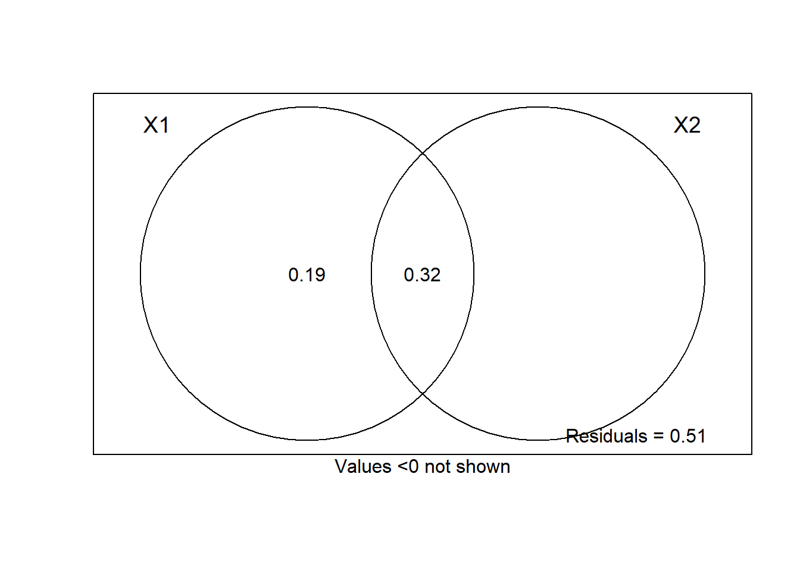
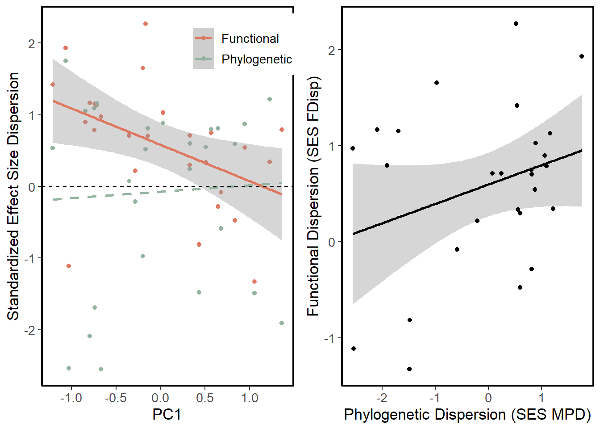
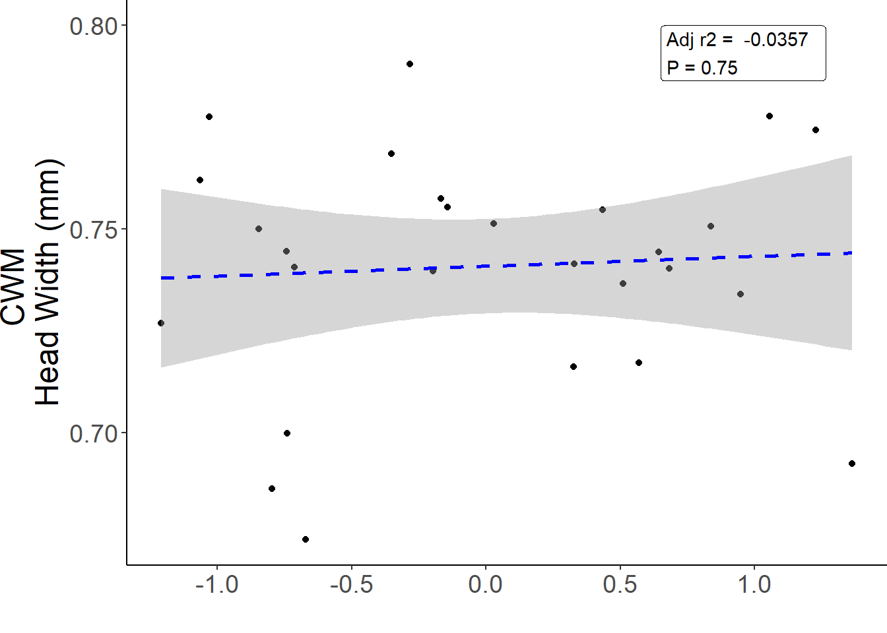
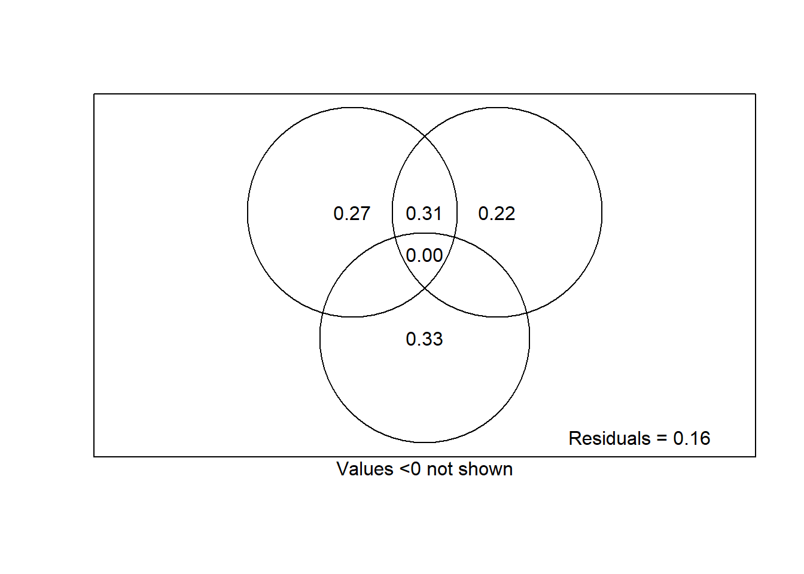

library(dplyr)
library(tidyr)
library(ggplot2)
library(performance)
library(glmmTMB)
library(vegan)
library(ggvegan)
library(FD)
library(picante)
library(gridExtra)Ants species coexistence
Functions
multiple.func <- function(x) {
c(mean = mean(x), sd = sd(x))}Data Cleaning
#see Cleaning.R in scripts folder for data cleaning
wide <- read.csv("Clean Data/ants_wide.csv")
cov <- read.csv("Clean Data/ants.csv")
site_data <- read.csv("Clean Data/sites_joined.csv")
cov <- right_join(site_data, cov, by = c("Site", "month"))
cov <- dplyr::select(cov, 3:10, 14:19, 22:36, 39:41)
#total count of ants
sum(cov$abun)[1] 15519#add ecostress sensor data
eco <- read.csv("Clean Data/ecostress.csv")
eco <- select(eco, 1, 2, 11)
eco <- rename(eco, month = Category, Site = ID, esi = ECO4ESIPTJPL_001_Evaporative_Stress_Index_PT_JPL_ESIavg)
cov <- right_join(eco, cov, by = c("Site", "month"))
#read in foundation plant identity for the sites
shrubs <- read.csv("Clean Data/shrubs.csv")
cov <- right_join(cov, shrubs, by = "Site")
cov$shrub.site <- as.factor(cov$shrub.site)
#read in ndvi and soil data
ndvi <- read.csv("raw data/sites_remotesensing.csv")
ndvi <- select(ndvi, 7:17) %>%
rename(Site = site)
ndvi$Site <- gsub("MoV", "Mov", ndvi$Site)
cov <- right_join(cov, ndvi, by = c("Site", "month"))
cov$sites <- paste(cov$Site, cov$month)#cleaning the raw trait data
traits <- read.csv("raw data/Traits.csv")
#check for spelling mistakes in trait labels
unique(traits$Trait)[1] "Scale bar" "Femur" "Scape" "Mandible length"
[5] "Head length" "Eye length" "Eye width" "Head width"
[9] "Webers" #I don't trust the eye width measurements because they were measured from the front
traits <- filter(traits, Trait != "Eye width")
#unique(traits$Photo)
#extract site IDs from photo names
traits <- separate(traits, Photo, c("Site", "Slide", "Specimen"))Warning: Expected 3 pieces. Additional pieces discarded in 1833 rows [10, 11,
12, 13, 14, 15, 16, 17, 18, 19, 20, 21, 22, 23, 24, 25, 26, 27, 28, 29, ...].traits$Site <- gsub("Papl", "PaPl", traits$Site)
unique(traits$Site)[1] "Aven" "CaS" "CaSl" "Coal" "Lok" "Mov" "PaPl" "SemiT" "SiCr" traits <- traits[-1,]
#remove the double pheidole entry
traits <- traits[-2,]
#need to divide the trait values by weber's body length. I want to do this at the individual level, not dividing means by mean webers
traits <- select(traits, -X, -Label)
traits <- pivot_wider(traits, names_from = Trait, values_from = Measure)
traits <- mutate(traits, Femur.w = Femur/Webers, Scape.w = Scape/Webers, Mandible.w = `Mandible length`/Webers, Headl.w = `Head length`/Webers, Eyel.w = `Eye length`/Webers, Headw.w = `Head width`/Webers)
traits <- pivot_longer(traits, 5:17, names_to = "Trait", values_to = "Measure")
#check for ant species name typoes
unique(traits$X.1) [1] "Pheidole hyatti" "Solenopsis xyloni"
[3] "Dorymyrmex bicolor" "Messor pergandei"
[5] "Forelius pruinosis" "Cyphomyrmex wheeleri"
[7] "Dorymyrmex insanus" "Messor andrei"
[9] "Myrmecocystus" "Pogonomyrmex californicus"
[11] "Temnothorax andrei" #some traits are NA because of damage to the specimen
traits <- drop_na(traits)
#calculate the mean value of the trait for each species at each site (population level trait values)
traits.ag <- group_by(traits, Site, X.1, Trait) %>%
summarise(mean = mean(Measure), sd = sd(Measure))`summarise()` has grouped output by 'Site', 'X.1'. You can override using the
`.groups` argument.#create a data frame of the mean values for each species across all sites (species level trait values)
traits.sp <- group_by(traits, X.1, Trait) %>%
summarise(mean = mean(Measure), sd = sd(Measure))`summarise()` has grouped output by 'X.1'. You can override using the `.groups`
argument.Calculations
#convert to presence absence
long.pres <- pivot_longer(wide, 2:14, names_to = "species", values_to = "count")
long.pres <- mutate(long.pres, count.bin = ifelse(count >= 1, 1, 0))
#get total abundance per trap
long.pres <- group_by(long.pres, uniID) %>%
mutate(total = sum(count.bin))
#calculate relative abundances
long.pres <- long.pres %>% mutate(rel.abun = count.bin/total)
traits.ag <- rename(traits.ag, species = X.1)
traits.ag$species <- gsub(" ", "", traits.ag$species)
#add sites to long
long.pres <- cov %>% select(Site, uniID) %>% right_join(long.pres, . , by = 'uniID')
#this adds NA traits to 0 abundances - species isn't found at pitfall or site
join.right <- right_join(traits.ag, long.pres, by = c("Site", "species"))#make a presence/absence pitfall trap data frame
spe.bin <- long.pres
spe.bin <- select(spe.bin, 2, 3, 5)
spe.bin <- pivot_wider(spe.bin, names_from = species, values_from = count.bin)
spe.bin <- select(spe.bin, -11, -12)PCA
Traits - Invidividuals
# I want the PCA on traits
# make it wide again
traits.wide <- pivot_wider(traits, names_from = Trait, values_from = Measure)
#keep only weber lengthh standardized traits
traits.wide <- select(traits.wide, 11:17)
traits.wide <- drop_na(traits.wide)
traits.st <- decostand(traits.wide, method = "standardize")
traits.pca <- rda(traits.st)
#summary(traits.pca)
biplot(traits.pca, xlab = "PCA 33.9%", ylab = "PCA 32.9%")
#PC3 is ~15%Populations
trait.pop <- traits.ag
trait.pop$spepop <- paste(trait.pop$species, trait.pop$Site)
trait.pop <- ungroup(trait.pop) %>% select(spepop, Trait, mean)
trait.pop <- pivot_wider(trait.pop, names_from = Trait, values_from = mean)
trait.pop <- select(trait.pop, 1, 3, 5, 8, 9, 11, 13, 14)
trait.pop.st <- select(trait.pop, -1) %>% decostand(method = "standardize")
#rename the column names for the figure
colnames(trait.pop.st) <- c("Eye length", "Femur length", "Head \n length", "Head\n Width", "Mandible\n length", "Scape length", "Weber's \nbody length")
trait.pop.pca <- rda(trait.pop.st)
#summary(trait.pop.pca)
pcplot1 <- autoplot(trait.pop.pca, xlab = "PCA Axis 1 (35.8%)", ylab = "PCA Axis 2 (32.2%)") + theme(panel.grid.major = element_blank(), panel.grid.minor = element_blank(), panel.background = element_rect(colour = "black", size=1, fill = NA), axis.line = element_line(colour = "black")) + theme(legend.position = "none") + xlim(-1.5, 1.8)Warning: The `size` argument of `element_rect()` is deprecated as of ggplot2 3.4.0.
ℹ Please use the `linewidth` argument instead.pcplot1#PCA3 ~ 16%Sites - site-level
env2 <- select(cov, 3:5, 8, 12:15, 37:43, sites) %>% drop_na() %>% distinct()
env2_sitelabels <- env2$sites
env2 <- select(env2, -sites)
#standardize to mean of zero etc
env.d2 <- decostand(env2, method = "standardize")
env.pca2 <- rda(env.d2)
a <- summary(env.pca2)
b <- a$cont$importance
prop1 <- b[2,1] * 100
prop1 <- round(prop1, digits = 2)
prop2 <- b[2,2] * 100
prop2 <- round(prop2, digits = 2)
#summary(env.pca2)
autoplot(env.pca2, xlab = paste("PCA", prop1), ylab = paste("PCA", prop2))
#sitescores <- scores(env.pca2, c(1,2, 3), 'sites')
envreduce <- select(env2, -esi, -arid, -10, -12, -13, -14)
env.reduce <- decostand(envreduce, method = "standardize")
colnames(env.reduce) <- c("Mean Cover", "Variation Cover", "Mean Veg Height", "Mean Annual \n Temperature", "Mean Annual Precipitation", "Maximum \n Temperature", "NDVI", "Mean Soil Temp", "Range Soil Temp")
env.pcareduce <- rda(env.reduce)
a <- summary(env.pcareduce)
b <- a$cont$importance
prop1 <- b[2,1] * 100
prop1 <- round(prop1, digits = 2)
prop2 <- b[2,2] * 100
prop2 <- round(prop2, digits = 2)
summary(env.pcareduce)
Call:
rda(X = env.reduce)
Partitioning of variance:
Inertia Proportion
Total 9 1
Unconstrained 9 1
Eigenvalues, and their contribution to the variance
Importance of components:
PC1 PC2 PC3 PC4 PC5 PC6 PC7
Eigenvalue 4.3345 1.5521 1.3003 0.74383 0.51194 0.29397 0.20677
Proportion Explained 0.4816 0.1725 0.1445 0.08265 0.05688 0.03266 0.02297
Cumulative Proportion 0.4816 0.6541 0.7985 0.88118 0.93807 0.97073 0.99370
PC8 PC9
Eigenvalue 0.051576 0.0050793
Proportion Explained 0.005731 0.0005644
Cumulative Proportion 0.999436 1.0000000
Scaling 2 for species and site scores
* Species are scaled proportional to eigenvalues
* Sites are unscaled: weighted dispersion equal on all dimensions
* General scaling constant of scores: 3.911145
Species scores
PC1 PC2 PC3 PC4 PC5 PC6
Mean Cover -0.1994 -1.18939 0.20134 0.03781 0.19724 -0.29603
Variation Cover 0.9554 0.52540 -0.12051 0.16815 -0.54976 -0.30644
Mean Veg Height 0.5946 -0.03471 0.78897 -0.79956 -0.15408 0.20243
Mean Annual \n Temperature 1.2517 -0.18078 -0.20057 0.03157 0.08080 0.08483
Mean Annual Precipitation -1.1162 0.49376 0.32654 -0.13258 0.07554 -0.18860
Maximum \n Temperature 1.0813 -0.63138 0.01782 0.10157 -0.26002 0.03410
NDVI 0.3127 0.18047 0.98632 0.73604 0.10852 0.18986
Mean Soil Temp 0.9855 0.36868 -0.47134 -0.06050 0.53397 0.12931
Range Soil Temp 1.0052 0.32019 0.43635 -0.14480 0.35849 -0.42478
Site scores (weighted sums of species scores)
PC1 PC2 PC3 PC4 PC5 PC6
sit1 0.64351 -0.5007 -0.725438 -0.7455 -0.810918 -0.14371
sit2 -0.74194 0.5412 0.108352 -0.1507 0.206381 -0.08248
sit3 -1.20898 0.7029 -0.331662 -0.0428 0.490721 -0.74433
sit4 0.56856 0.3548 0.266016 0.2545 -1.381324 0.36172
sit5 0.51013 -0.5677 -0.132058 -1.3162 1.245698 0.41372
sit6 -0.28201 -0.5827 -0.649898 0.4630 0.427861 1.40192
sit7 -0.74000 -1.2969 1.565620 -0.4170 0.172264 -0.45283
sit8 0.94709 0.8571 -0.801954 0.6558 0.591111 -0.91391
sit9 -0.19825 -0.6408 -0.893368 0.7572 -0.530083 -0.24337
sit10 0.83712 -0.9331 0.743799 -0.4717 1.040020 -0.92332
sit11 -0.84470 0.8108 0.370045 -0.7902 0.063900 0.14024
sit12 -1.02926 1.4030 0.326255 -0.6496 0.289992 1.53975
sit13 0.32920 -0.7569 0.557304 0.4144 0.006087 0.11699
sit14 0.43428 -0.4409 -0.569616 -1.0108 1.316768 0.22559
sit15 -0.14377 -0.3449 -0.143868 1.6282 0.179381 1.31407
sit16 -0.67067 -0.2409 0.431817 -0.9580 -1.004252 -0.54094
sit17 1.22700 0.6444 1.009521 0.5959 0.499612 0.12615
sit18 -0.16853 -0.4159 -1.780906 -1.2715 -1.386545 -0.57888
sit19 1.36348 0.6556 1.488194 -0.2852 -1.007324 0.11247
sit20 -0.71362 0.9359 -0.047458 0.7364 -0.116222 -0.43942
sit21 -1.06529 0.7318 0.141801 0.4131 0.650523 -1.31995
sit22 0.32691 -0.5166 -0.009163 0.6818 -0.351307 -0.53919
sit23 0.68249 0.6844 -0.337589 -0.8470 0.243426 1.22871
sit24 -0.35134 -1.1415 -0.763602 0.9214 0.753526 0.28158
sit25 -0.79586 -0.8457 1.007258 0.4688 -0.589646 -0.17102
sit26 1.05612 1.0050 -0.663457 0.5646 0.166269 -1.03328
sit27 0.02832 -0.1018 -0.165942 0.4009 -1.165918 0.86371pcplot2 <- autoplot(env.pcareduce , xlab = paste("PCA Axis 1 (", prop1, "%)", sep = ""), ylab = paste("PCA Axis 2 (", prop2, "%)", sep = "")) + xlim(-1.5, 1.6) + theme(panel.grid.major = element_blank(), panel.grid.minor = element_blank(), panel.background = element_rect(colour = "black", size=1, fill = NA), axis.line = element_line(colour = "black")) + theme(legend.position = "none")
sitescores <- scores(env.pcareduce, c(1,2, 3), 'sites')
sitescores <- as.data.frame(cbind(sitescores, env2_sitelabels))#Figure 2
gA <- ggplotGrob(pcplot1)
gB <- ggplotGrob(pcplot2)
grid::grid.newpage()
grid::grid.draw(rbind(gA, gB))
Functional dispersion
#need a species by trait matrix, but I want to use the population means
#make species name the name + site
site.pop <- select(cov, 1, 2, 31) %>% left_join(long.pres, ., by = 'uniID')
#count uniID per site and month
counts <- site.pop %>% group_by(Site.x, month, uniID) %>% count()
counts <- counts %>% group_by(Site.x, month) %>% count()
site.pop <- site.pop %>% group_by(Site.x, month, species) %>% summarize(total = sum(count.bin)) `summarise()` has grouped output by 'Site.x', 'month'. You can override using
the `.groups` argument.site.pop <- left_join(site.pop, counts, by = c("Site.x", "month"))
site.pop <- mutate(site.pop, pit.abun = total/n)
site.pop <- select(site.pop, 1:3, 6)
site.pop$site.name <- paste(site.pop$Site.x, site.pop$month)
site.pop$spepop <- paste(site.pop$species, site.pop$Site.x)
site.pop <- site.pop %>% ungroup() %>% select(4:6)
wide.pop <- pivot_wider(site.pop, names_from = spepop, values_from = pit.abun)
wide.pop[is.na(wide.pop)] <- 0
sites <- wide.pop$site.name
#there are no trait measurements for species that are absent from a site
wide.pop <- ungroup(wide.pop) %>% select(-site.name)
wide.pop <- wide.pop[which(colSums(wide.pop) !=0)]
wide.pop <- cbind(sites, wide.pop)
row.names(wide.pop) <- wide.pop$sites
wide.pop <- select(wide.pop, -sites)
#remove the two solenopsis singletons - no trait measuremnts
wide.pop <- select(wide.pop, -36, -42)
#check to ensure names are matched correctly between dataframes
spec <- colnames(wide.pop)
trait.pop <- as.data.frame(trait.pop)
row.names(trait.pop) <- trait.pop$spepop
trait.pop <- select(trait.pop, -spepop)
all.equal(spec, row.names(trait.pop))[1] TRUENull model/SES calculation
resultsRandom <- readRDS("Clean Data/objects/FDispRandom_sites.rds")
obsFDis <- dbFD(trait.pop, wide.pop, w.abun = TRUE)$FDisFEVe: Could not be calculated for communities with <3 functionally singular species.
FRic: To respect s > t, FRic could not be calculated for communities with <3 functionally singular species.
FRic: Dimensionality reduction was required. The last 5 PCoA axes (out of 7 in total) were removed.
FRic: Quality of the reduced-space representation = 0.6807776
FDiv: Could not be calculated for communities with <3 functionally singular species. meanNull3 <- rowMeans(resultsRandom)
ES3 <- obsFDis - meanNull3
sdNull3 <- apply(resultsRandom, 1, sd)
SES3 <- ES3 / sdNull3
SES_dis <- data.frame(SES3)
SES_dis$sites <- row.names(SES_dis)
#make random values negative
resultsRandom_neg <- resultsRandom * -1
diff <- sweep(resultsRandom_neg, 1, obsFDis, "+")
diff_ses <- sweep(diff, 1, meanNull3, "/")
diff_ses_ag <- apply(diff_ses, 1, multiple.func)
diff_ses_ag <- t(diff_ses_ag)
diff_ses_ag <- cbind(diff_ses_ag, SES_dis$sites)
#get rid of last row
diff_ses_ag <- head(diff_ses_ag, 27)
test <- cbind(sdNull3, diff_ses_ag)
test <- as.data.frame(test)
test$sd <- as.numeric(test$sd)
test <- rename(test, sdrand = sdNull3)
test$sdrand <- as.numeric(test$sdrand)
cor.test(test$sd, test$sdrand)
Pearson's product-moment correlation
data: test$sd and test$sdrand
t = 15.092, df = 25, p-value = 4.57e-14
alternative hypothesis: true correlation is not equal to 0
95 percent confidence interval:
0.8904620 0.9768807
sample estimates:
cor
0.9492583 #variation in SES values is the same as the random variation in fdisp calculated from a null model
#join site-level environmental measurements to data
cov$sites <- paste(cov$Site, cov$month)
SES <- select(cov, 1:15, shrub.site, sites, 37:43) %>% distinct() %>% left_join(SES_dis, by = "sites")Functional dispersion and PC gradient
SES2 <- cbind(SES, sitescores)
SES2$PC1 <- as.numeric(SES2$PC1)
SES2$PC2 <- as.numeric(SES2$PC2)
SES2$PC3 <- as.numeric(SES2$PC3)
#need to add raw FDisp score
mean(SES$SES3)[1] 0.5827153t.test(SES$SES3)
One Sample t-test
data: SES$SES3
t = 3.5237, df = 26, p-value = 0.001597
alternative hypothesis: true mean is not equal to 0
95 percent confidence interval:
0.2427901 0.9226405
sample estimates:
mean of x
0.5827153 m1 <- lm(SES3 ~ PC1 + PC2 , data = SES2)
summary(m1)
Call:
lm(formula = SES3 ~ PC1 + PC2, data = SES2)
Residuals:
Min 1Q Median 3Q Max
-1.96859 -0.25105 0.00759 0.46945 1.52957
Coefficients:
Estimate Std. Error t value Pr(>|t|)
(Intercept) 0.5827 0.1511 3.856 0.000757 ***
PC1 -0.5067 0.2008 -2.524 0.018632 *
PC2 -0.1760 0.2008 -0.877 0.389297
---
Signif. codes: 0 '***' 0.001 '**' 0.01 '*' 0.05 '.' 0.1 ' ' 1
Residual standard error: 0.7852 on 24 degrees of freedom
Multiple R-squared: 0.2293, Adjusted R-squared: 0.165
F-statistic: 3.569 on 2 and 24 DF, p-value: 0.04394fit1 <- lm(SES3 ~ PC1, data = SES2)
summary(fit1)
Call:
lm(formula = SES3 ~ PC1, data = SES2)
Residuals:
Min 1Q Median 3Q Max
-2.2155 -0.2442 0.0500 0.4122 1.6028
Coefficients:
Estimate Std. Error t value Pr(>|t|)
(Intercept) 0.5827 0.1504 3.874 0.000684 ***
PC1 -0.5067 0.1998 -2.536 0.017849 *
---
Signif. codes: 0 '***' 0.001 '**' 0.01 '*' 0.05 '.' 0.1 ' ' 1
Residual standard error: 0.7816 on 25 degrees of freedom
Multiple R-squared: 0.2046, Adjusted R-squared: 0.1728
F-statistic: 6.43 on 1 and 25 DF, p-value: 0.01785ggplot(SES2, aes(PC1, SES3)) + geom_point() + stat_smooth(method = "lm") + xlab("PC1") + theme(panel.grid.major = element_blank(), panel.grid.minor = element_blank(),
panel.background = element_rect(colour = "black", size=1, fill = NA), axis.line = element_line(colour = "black")) + ylab("SES Functional dispersion")+ geom_label(aes(x = 0.75, y = 2),vjust=1, hjust = 0,
label = paste("Adj r2 = ",signif(summary(fit1)$adj.r.squared, 3),
" \nP =",signif(summary(fit1)$coef[2,4], 3))) + geom_hline(yintercept = 0, linetype = "dashed") `geom_smooth()` using formula = 'y ~ x'SES2 <- mutate(SES2, shrub = ifelse(shrub.site == "atriplex", "shrub", (ifelse(shrub.site == "ephedra", "shrub", "open"))))
m <- lm(SES3 ~ shrub, data = SES2)
summary(m)
Call:
lm(formula = SES3 ~ shrub, data = SES2)
Residuals:
Min 1Q Median 3Q Max
-1.88622 -0.36724 0.08486 0.51944 1.70934
Coefficients:
Estimate Std. Error t value Pr(>|t|)
(Intercept) 0.62506 0.29192 2.141 0.0422 *
shrubshrub -0.06351 0.35753 -0.178 0.8604
---
Signif. codes: 0 '***' 0.001 '**' 0.01 '*' 0.05 '.' 0.1 ' ' 1
Residual standard error: 0.8758 on 25 degrees of freedom
Multiple R-squared: 0.001261, Adjusted R-squared: -0.03869
F-statistic: 0.03156 on 1 and 25 DF, p-value: 0.8604#new heat map
mat3 <- select(SES2, esi, 4,5, 8, 12:15, 18, 24, 24:28)
M3 <- cor(mat3)
corrplot::corrplot(M3, method = "number")Variance partitioning
library(adespatial)Registered S3 methods overwritten by 'adegraphics':
method from
biplot.dudi ade4
kplot.foucart ade4
kplot.mcoa ade4
kplot.mfa ade4
kplot.pta ade4
kplot.sepan ade4
kplot.statis ade4
scatter.coa ade4
scatter.dudi ade4
scatter.nipals ade4
scatter.pco ade4
score.acm ade4
score.mix ade4
score.pca ade4
screeplot.dudi ade4Registered S3 method overwritten by 'spdep':
method from
plot.mst ape Registered S3 methods overwritten by 'adespatial':
method from
plot.multispati adegraphics
print.multispati ade4
summary.multispati ade4
Attaching package: 'adespatial'The following object is masked from 'package:ade4':
multispatilibrary(SoDA)
#convert our degrees in lat long to cartesian
sites.xy <- geoXY(SES2$Lat.x, SES2$Long.x)
mem <- dbmem(sites.xy)
var_df <- cbind(SES2, sites.xy)
disp <- SES2$SES3
env <- select(SES2, 4, 5, 8, 12:14, 18, 19, 24)
v1 <- varpart(Y =disp, X = env, sites.xy)
summary(v1)
Unique fractions and total with shared fractions equally allocated:
Unique Contributed Component
X1 0.192 0.35 env
X2 -0.018 0.14 sites.xy
Contributions of fractions to sets:
X1 X2
[a] 0.192
[b] -0.018
[c] 0.158 0.158#showvarparts(v1)
plot(v1)
#rda(v1)Taxonomic diversity
Species richness ~ PC1
#use long pres
#join month by identifier
#remove the two singletons?
alpha <- select(cov, uniID, month) %>% right_join(long.pres, by = "uniID")
alpha$sites <- paste(alpha$Site, alpha$month)
alpha <- filter(alpha, species != "Solenopsisaurea" & species != "Solenopsismolesta")
alpha <- select(alpha, sites, species, count.bin)
alpha <- distinct(alpha)
alpha <- alpha %>% group_by(sites) %>% summarise(richness = sum(count.bin))
alpha <- right_join(alpha, SES2, by = "sites")
#same GLM or GLMM
m1 <- glmmTMB(richness ~ PC1 + PC2, family = "poisson", data = alpha)
summary(m1) Family: poisson ( log )
Formula: richness ~ PC1 + PC2
Data: alpha
AIC BIC logLik deviance df.resid
102.8 106.7 -48.4 96.8 24
Conditional model:
Estimate Std. Error z value Pr(>|z|)
(Intercept) 1.3996 0.0962 14.549 <2e-16 ***
PC1 -0.1644 0.1245 -1.321 0.187
PC2 0.1437 0.1248 1.151 0.250
---
Signif. codes: 0 '***' 0.001 '**' 0.01 '*' 0.05 '.' 0.1 ' ' 1m2 <- glm(richness ~ Prec, family = "poisson", data = alpha)
summary(m2)
Call:
glm(formula = richness ~ Prec, family = "poisson", data = alpha)
Deviance Residuals:
Min 1Q Median 3Q Max
-1.1480 -0.3770 0.1114 0.3434 1.1934
Coefficients:
Estimate Std. Error z value Pr(>|z|)
(Intercept) 0.9945860 0.2517005 3.951 7.77e-05 ***
Prec 0.0014277 0.0007666 1.862 0.0625 .
---
Signif. codes: 0 '***' 0.001 '**' 0.01 '*' 0.05 '.' 0.1 ' ' 1
(Dispersion parameter for poisson family taken to be 1)
Null deviance: 12.5927 on 26 degrees of freedom
Residual deviance: 9.2511 on 25 degrees of freedom
AIC: 100.69
Number of Fisher Scoring iterations: 4m3 <- glm(richness ~ month, family = "poisson", data = alpha)
summary(m3)
Call:
glm(formula = richness ~ month, family = "poisson", data = alpha)
Deviance Residuals:
Min 1Q Median 3Q Max
-0.92069 -0.46980 0.05006 0.14355 1.28740
Coefficients:
Estimate Std. Error z value Pr(>|z|)
(Intercept) 1.35812 0.16903 8.035 9.38e-16 ***
monthJuly 0.22884 0.22649 1.010 0.312
monthSept -0.08961 0.24458 -0.366 0.714
---
Signif. codes: 0 '***' 0.001 '**' 0.01 '*' 0.05 '.' 0.1 ' ' 1
(Dispersion parameter for poisson family taken to be 1)
Null deviance: 12.593 on 26 degrees of freedom
Residual deviance: 10.526 on 24 degrees of freedom
AIC: 103.96
Number of Fisher Scoring iterations: 4car::Anova(m3)Analysis of Deviance Table (Type II tests)
Response: richness
LR Chisq Df Pr(>Chisq)
month 2.0664 2 0.3559tb <- table(alpha$richness, alpha$sites)
chisq.test(alpha$richness, alpha$Site)Warning in chisq.test(alpha$richness, alpha$Site): Chi-squared approximation may
be incorrect
Pearson's Chi-squared test
data: alpha$richness and alpha$Site
X-squared = 43.714, df = 40, p-value = 0.3166Taxonomic beta diversity
#functional indices are weighted so use abundance weighted beta-diversity
library(betapart)
# baselgi methods for beta-diversity
#we can use the occupancy population dateframe
#drop half of species name after space
#filter out two singletons
sites_species <- site.pop
sites_species <- separate(sites_species, spepop, into = c("species", "month"), sep = " ")
sites_species <- filter(sites_species, species != "Solenopsisaurea" & species != "Solenopsismolesta")
sites_species <- select(sites_species, -month)
# need wide
sites_species <- pivot_wider(sites_species, names_from = "species", values_from = "pit.abun") %>% as.data.frame()
row.names(sites_species) <- sites_species$site.name
sites_species <- select(sites_species, -site.name)
#balanced variation in abundance is turnover
#abundance gradients are nestedness
beta.core <- betapart.core.abund(sites_species)
betapair <- beta.pair.abund(beta.core)
betamulti <- beta.multi.abund(beta.core)
#turnover component
betamulti$beta.BRAY.BAL[1] 0.7726223#nestedness component
betamulti$beta.BRAY.GRA[1] 0.1070712#combined
betamulti$beta.BRAY[1] 0.8796935#mostly turnover, some nestedness
#betapair are dist objects
tdis <- betapair$beta.bray.bal
ndis <- betapair$beta.bray.gra
#let's use the standardized environmental variables from the pca scores
envbeta <- cbind(env.reduce, env2_sitelabels)
#sort envbeta to same order as site_species
envbeta <- envbeta[order(match(envbeta[,10], row.names(sites_species))),]
row.names(envbeta) <- envbeta$env2_sitelabels
envbeta <- select(envbeta, -env2_sitelabels)
env_dist <- dist(envbeta, "euclidean")
mantel(tdis, env_dist)
Mantel statistic based on Pearson's product-moment correlation
Call:
mantel(xdis = tdis, ydis = env_dist)
Mantel statistic r: 0.08226
Significance: 0.138
Upper quantiles of permutations (null model):
90% 95% 97.5% 99%
0.102 0.130 0.159 0.196
Permutation: free
Number of permutations: 999mantel(ndis, env_dist)
Mantel statistic based on Pearson's product-moment correlation
Call:
mantel(xdis = ndis, ydis = env_dist)
Mantel statistic r: 0.1643
Significance: 0.026
Upper quantiles of permutations (null model):
90% 95% 97.5% 99%
0.107 0.138 0.162 0.196
Permutation: free
Number of permutations: 999#turnover NOT related to env gradient
#nestedness - this is changes to abundance is related
#can I do mean at each site and plot against environment?#CWM-environment ## CWM ~ PC1
site_cwm <- dbFD(trait.pop, wide.pop, w.abun = TRUE)$CWMFEVe: Could not be calculated for communities with <3 functionally singular species.
FRic: To respect s > t, FRic could not be calculated for communities with <3 functionally singular species.
FRic: Dimensionality reduction was required. The last 5 PCoA axes (out of 7 in total) were removed.
FRic: Quality of the reduced-space representation = 0.6807776
FDiv: Could not be calculated for communities with <3 functionally singular species. cwm <- site_cwm
cwm$sites <- row.names(cwm)
cwm <- select(SES2, sites, PC1, PC2, PC3) %>% left_join(cwm, by = 'sites')fit1 <- lm(Webers ~ PC1, cwm)
a <- ggplot(fit1$model, aes_string(x = names(fit1$model)[2], y = names(fit1$model)[1])) +
geom_point() +
stat_smooth(method = "lm", col = "blue") +
geom_label(aes(x = 0.75, y = 1.4),vjust=1, hjust = 0,
label = paste("Adj r2 = ",signif(summary(fit1)$adj.r.squared, 3),
" \nP =",signif(summary(fit1)$coef[2,4], 3))) + ylab("CWM Weber's \nBody Length (mm)") + xlab("") + theme(panel.grid.major = element_blank(), panel.grid.minor = element_blank(),
panel.background = element_blank(), axis.line = element_line(colour = "black")) + theme(plot.margin=grid::unit(c(0,0,0,0), "mm")) + theme(text = element_text(size = 18))Warning: `aes_string()` was deprecated in ggplot2 3.0.0.
ℹ Please use tidy evaluation ideoms with `aes()`a`geom_smooth()` using formula = 'y ~ x'fit1 <- lm(Femur.w ~ PC1, cwm)
b <- ggplot(fit1$model, aes_string(x = names(fit1$model)[2], y = names(fit1$model)[1])) +
geom_point() +
stat_smooth(method = "lm", col = "blue") +
geom_label(aes(x = 0.8, y = 1.1),vjust=1, hjust = 0,
label = paste("Adj r2 = ",signif(summary(fit1)$adj.r.squared, 3),
" \nP =",signif(summary(fit1)$coef[2,4], 3))) + ylab("CWM \nFemur Length (mm)") + xlab("") + theme(panel.grid.major = element_blank(), panel.grid.minor = element_blank(),
panel.background = element_blank(), axis.line = element_line(colour = "black")) + theme(plot.margin=grid::unit(c(0,0,0,0), "mm"))+ theme(text = element_text(size = 18))
b`geom_smooth()` using formula = 'y ~ x'
fit1 <- lm(Headl.w ~ PC1, cwm)
c <- ggplot(fit1$model, aes_string(x = names(fit1$model)[2], y = names(fit1$model)[1])) +
geom_point() +
stat_smooth(method = "lm", col = "blue", linetype = "dashed") +
geom_label(aes(x = 0.65, y = 0.86),vjust=1, hjust = 0,
label = paste("Adj r2 = ",signif(summary(fit1)$adj.r.squared, 3),
" \nP =",signif(summary(fit1)$coef[2,4], 3))) + ylab("CWM \nHead Length (mm)") + xlab("") + theme(panel.grid.major = element_blank(), panel.grid.minor = element_blank(),
panel.background = element_blank(), axis.line = element_line(colour = "black")) + theme(plot.margin=grid::unit(c(0,0,0,0), "mm"))+ theme(text = element_text(size = 18))
c`geom_smooth()` using formula = 'y ~ x'fit1 <- lm(Eyel.w ~ PC1, cwm)
d <- ggplot(fit1$model, aes_string(x = names(fit1$model)[2], y = names(fit1$model)[1])) +
geom_point() +
stat_smooth(method = "lm", col = "blue", linetype = "dashed") +
geom_label(aes(x = 0.65, y = 0.2),vjust=1, hjust = 0,
label = paste("Adj r2 = ",signif(summary(fit1)$adj.r.squared, 3),
" \nP =",signif(summary(fit1)$coef[2,4], 3))) + ylab("CWM \nEye Length (mm)") + xlab("") + theme(panel.grid.major = element_blank(), panel.grid.minor = element_blank(),
panel.background = element_blank(), axis.line = element_line(colour = "black")) + theme(plot.margin=grid::unit(c(0,0,0,0), "mm"))+ theme(text = element_text(size = 18))
d`geom_smooth()` using formula = 'y ~ x'fit1 <- lm(Headw.w ~ PC1, cwm)
e <- ggplot(fit1$model, aes_string(x = names(fit1$model)[2], y = names(fit1$model)[1])) +
geom_point() +
stat_smooth(method = "lm", col = "blue", linetype = "dashed") +
geom_label(aes(x = 0.65, y = 0.8),vjust=1, hjust = 0,
label = paste("Adj r2 = ",signif(summary(fit1)$adj.r.squared, 3),
" \nP =",signif(summary(fit1)$coef[2,4], 3))) + xlab("") + theme(panel.grid.major = element_blank(), panel.grid.minor = element_blank(),
panel.background = element_blank(), axis.line = element_line(colour = "black")) + theme(plot.margin=grid::unit(c(0,0,0,0), "mm")) + ylab("CWM \nHead Width (mm)")+ theme(text = element_text(size = 18))
e`geom_smooth()` using formula = 'y ~ x'
fit1 <- lm(Scape.w ~ PC1, cwm)
f <- ggplot(fit1$model, aes_string(x = names(fit1$model)[2], y = names(fit1$model)[1])) +
geom_point() +
stat_smooth(method = "lm", col = "blue", linetype = "dashed") +
geom_label(aes(x = 0.7, y = 0.85),vjust=1, hjust = 0,
label = paste("Adj r2 = ",signif(summary(fit1)$adj.r.squared, 3),
" \nP =",signif(summary(fit1)$coef[2,4], 3))) + ylab("CWM \nScape Length (mm)") + xlab("") + theme(panel.grid.major = element_blank(), panel.grid.minor = element_blank(),
panel.background = element_blank(), axis.line = element_line(colour = "black")) + theme(plot.margin=grid::unit(c(0,0,0,0), "mm")) + theme(text = element_text(size = 18))
f`geom_smooth()` using formula = 'y ~ x'fit1 <- lm(Mandible.w ~ PC1, cwm)
g <- ggplot(fit1$model, aes_string(x = names(fit1$model)[2], y = names(fit1$model)[1])) +
geom_point() +
stat_smooth(method = "lm", col = "blue", linetype = "dashed") +
geom_label(aes(x = 0.65, y = 0.5),vjust=1, hjust = 0,
label = paste("Adj r2 = ",signif(summary(fit1)$adj.r.squared, 3),
" \nP =",signif(summary(fit1)$coef[2,4], 3))) + ylab("CWM \nMandible Length (mm)") + xlab("") + theme(panel.grid.major = element_blank(), panel.grid.minor = element_blank(),
panel.background = element_blank(), axis.line = element_line(colour = "black")) + theme(plot.margin=grid::unit(c(0,0,0,0), "mm"))+ theme(text = element_text(size = 18))
g`geom_smooth()` using formula = 'y ~ x'plots <- list(a,b,c,d,e,f,g)
grobs <- list()
widths <- list()
for (i in 1:length(plots)){
grobs[[i]] <- ggplotGrob(plots[[i]])
widths[[i]] <- grobs[[i]]$widths[2:5]
}`geom_smooth()` using formula = 'y ~ x'
`geom_smooth()` using formula = 'y ~ x'
`geom_smooth()` using formula = 'y ~ x'
`geom_smooth()` using formula = 'y ~ x'
`geom_smooth()` using formula = 'y ~ x'
`geom_smooth()` using formula = 'y ~ x'
`geom_smooth()` using formula = 'y ~ x'maxwidth <- do.call(grid::unit.pmax, widths)
for (i in 1:length(grobs)){
grobs[[i]]$widths[2:5] <- as.list(maxwidth)
}
p <- do.call("grid.arrange", c(grobs, ncol = 2))
pTableGrob (4 x 2) "arrange": 7 grobs
z cells name grob
1 1 (1-1,1-1) arrange gtable[layout]
2 2 (1-1,2-2) arrange gtable[layout]
3 3 (2-2,1-1) arrange gtable[layout]
4 4 (2-2,2-2) arrange gtable[layout]
5 5 (3-3,1-1) arrange gtable[layout]
6 6 (3-3,2-2) arrange gtable[layout]
7 7 (4-4,1-1) arrange gtable[layout]CWM ~ PC2
fit1 <- lm(Webers ~ PC2, cwm)
a <- ggplot(fit1$model, aes_string(x = names(fit1$model)[2], y = names(fit1$model)[1])) +
geom_point() +
stat_smooth(method = "lm", col = "blue", linetype = "dashed") +
geom_label(aes(x = 0.75, y = 1.3),vjust=1, hjust = 0,
label = paste("Adj r2 = ",signif(summary(fit1)$adj.r.squared, 3),
" \nP =",signif(summary(fit1)$coef[2,4], 3))) + ylab("CWM Weber's \nBody Length (mm)") + xlab("") + theme(panel.grid.major = element_blank(), panel.grid.minor = element_blank(),
panel.background = element_blank(), axis.line = element_line(colour = "black")) + theme(plot.margin=grid::unit(c(0,0,0,0), "mm")) + theme(text = element_text(size = 18))
a`geom_smooth()` using formula = 'y ~ x'fit1 <- lm(Femur.w ~ PC2, cwm)
b <- ggplot(fit1$model, aes_string(x = names(fit1$model)[2], y = names(fit1$model)[1])) +
geom_point() +
stat_smooth(method = "lm", col = "blue", linetype = "dashed") +
geom_label(aes(x = 0.7, y = 1.1),vjust=1, hjust = 0,
label = paste("Adj r2 = ",signif(summary(fit1)$adj.r.squared, 3),
" \nP =",signif(summary(fit1)$coef[2,4], 3))) + ylab("CWM \nFemur Length (mm)") + xlab("") + theme(panel.grid.major = element_blank(), panel.grid.minor = element_blank(),
panel.background = element_blank(), axis.line = element_line(colour = "black")) + theme(plot.margin=grid::unit(c(0,0,0,0), "mm"))+ theme(text = element_text(size = 18))
b`geom_smooth()` using formula = 'y ~ x'fit1 <- lm(Headl.w ~ PC2, cwm)
c <- ggplot(fit1$model, aes_string(x = names(fit1$model)[2], y = names(fit1$model)[1])) +
geom_point() +
stat_smooth(method = "lm", col = "blue", linetype = "dashed") +
geom_label(aes(x = 0.75, y = 0.86),vjust=1, hjust = 0,
label = paste("Adj r2 = ",signif(summary(fit1)$adj.r.squared, 3),
" \nP =",signif(summary(fit1)$coef[2,4], 3))) + ylab("CWM \nHead Length (mm)") + xlab("") + theme(panel.grid.major = element_blank(), panel.grid.minor = element_blank(),
panel.background = element_blank(), axis.line = element_line(colour = "black")) + theme(plot.margin=grid::unit(c(0,0,0,0), "mm"))+ theme(text = element_text(size = 18))
c`geom_smooth()` using formula = 'y ~ x'fit1 <- lm(Eyel.w ~ PC2, cwm)
d <- ggplot(fit1$model, aes_string(x = names(fit1$model)[2], y = names(fit1$model)[1])) +
geom_point() +
stat_smooth(method = "lm", col = "blue", linetype = "dashed") +
geom_label(aes(x = 0.75, y = 0.2),vjust=1, hjust = 0,
label = paste("Adj r2 = ",signif(summary(fit1)$adj.r.squared, 3),
" \nP =",signif(summary(fit1)$coef[2,4], 3))) + ylab("CWM \nEye Length (mm)") + xlab("") + theme(panel.grid.major = element_blank(), panel.grid.minor = element_blank(),
panel.background = element_blank(), axis.line = element_line(colour = "black")) + theme(plot.margin=grid::unit(c(0,0,0,0), "mm"))+ theme(text = element_text(size = 18))
d`geom_smooth()` using formula = 'y ~ x'fit1 <- lm(Headw.w ~ PC2, cwm)
e <- ggplot(fit1$model, aes_string(x = names(fit1$model)[2], y = names(fit1$model)[1])) +
geom_point() +
stat_smooth(method = "lm", col = "blue", linetype = "dashed") +
geom_label(aes(x = 0.75, y = 0.8),vjust=1, hjust = 0,
label = paste("Adj r2 = ",signif(summary(fit1)$adj.r.squared, 3),
" \nP =",signif(summary(fit1)$coef[2,4], 3))) + xlab("") + theme(panel.grid.major = element_blank(), panel.grid.minor = element_blank(),
panel.background = element_blank(), axis.line = element_line(colour = "black")) + theme(plot.margin=grid::unit(c(0,0,0,0), "mm")) + ylab("CWM \nHead Width (mm)")+ theme(text = element_text(size = 18))
e`geom_smooth()` using formula = 'y ~ x'fit1 <- lm(Scape.w ~ PC2, cwm)
f <- ggplot(fit1$model, aes_string(x = names(fit1$model)[2], y = names(fit1$model)[1])) +
geom_point() +
stat_smooth(method = "lm", col = "blue", linetype = "dashed") +
geom_label(aes(x = 0.75, y = 0.85),vjust=1, hjust = 0,
label = paste("Adj r2 = ",signif(summary(fit1)$adj.r.squared, 3),
" \nP =",signif(summary(fit1)$coef[2,4], 3))) + ylab("CWM \nScape Length (mm)") + xlab("") + theme(panel.grid.major = element_blank(), panel.grid.minor = element_blank(),
panel.background = element_blank(), axis.line = element_line(colour = "black")) + theme(plot.margin=grid::unit(c(0,0,0,0), "mm")) + theme(text = element_text(size = 18))
f`geom_smooth()` using formula = 'y ~ x'fit1 <- lm(Mandible.w ~ PC2, cwm)
g <- ggplot(fit1$model, aes_string(x = names(fit1$model)[2], y = names(fit1$model)[1])) +
geom_point() +
stat_smooth(method = "lm", col = "blue") +
geom_label(aes(x = 0.75, y = 0.5),vjust=1, hjust = 0,
label = paste("Adj r2 = ",signif(summary(fit1)$adj.r.squared, 3),
" \nP =",signif(summary(fit1)$coef[2,4], 3))) + ylab("CWM \nMandible Length (mm)") + xlab("") + theme(panel.grid.major = element_blank(), panel.grid.minor = element_blank(),
panel.background = element_blank(), axis.line = element_line(colour = "black")) + theme(plot.margin=grid::unit(c(0,0,0,0), "mm"))+ theme(text = element_text(size = 18))
g`geom_smooth()` using formula = 'y ~ x'
plots <- list(a,b,c,d,e,f,g)
grobs <- list()
widths <- list()
for (i in 1:length(plots)){
grobs[[i]] <- ggplotGrob(plots[[i]])
widths[[i]] <- grobs[[i]]$widths[2:5]
}`geom_smooth()` using formula = 'y ~ x'
`geom_smooth()` using formula = 'y ~ x'
`geom_smooth()` using formula = 'y ~ x'
`geom_smooth()` using formula = 'y ~ x'
`geom_smooth()` using formula = 'y ~ x'
`geom_smooth()` using formula = 'y ~ x'
`geom_smooth()` using formula = 'y ~ x'maxwidth <- do.call(grid::unit.pmax, widths)
for (i in 1:length(grobs)){
grobs[[i]]$widths[2:5] <- as.list(maxwidth)
}
p <- do.call("grid.arrange", c(grobs, ncol = 2))
pTableGrob (4 x 2) "arrange": 7 grobs
z cells name grob
1 1 (1-1,1-1) arrange gtable[layout]
2 2 (1-1,2-2) arrange gtable[layout]
3 3 (2-2,1-1) arrange gtable[layout]
4 4 (2-2,2-2) arrange gtable[layout]
5 5 (3-3,1-1) arrange gtable[layout]
6 6 (3-3,2-2) arrange gtable[layout]
7 7 (4-4,1-1) arrange gtable[layout]ITV
Intraspecific trait variation
Body size
itv <- data.frame()
#body size
webers <- traits %>% filter(Trait == "Webers")
partition <- aov(Measure~X.1, data = webers)
summary(partition) Df Sum Sq Mean Sq F value Pr(>F)
X.1 10 52.89 5.289 295.8 <2e-16 ***
Residuals 252 4.51 0.018
---
Signif. codes: 0 '***' 0.001 '**' 0.01 '*' 0.05 '.' 0.1 ' ' 1#ITV is a low component of overall variability
logWebers <- log(webers$Measure)
modPart <- lme(logWebers ~ 1, random = ~ 1 | Site / X.1, data = webers, na.action = na.omit)
varcompWeber <- ape::varcomp(modPart, scale = 1)
varcompWeber Site X.1 Within
2.839732e-09 9.079277e-01 9.207234e-02
attr(,"class")
[1] "varcomp"#body size differences between individuals of the same species within a site account for 9.2% variation
#differences among species within a site account for 90.7%
#differences among species between sites accounts for 0 %Femur length
# relative leg length
femur <- traits %>% filter(Trait == "Femur.w")
partition <- aov(Measure~X.1, data = femur)
summary(partition) Df Sum Sq Mean Sq F value Pr(>F)
X.1 10 2.085 0.20850 43.34 <2e-16 ***
Residuals 251 1.208 0.00481
---
Signif. codes: 0 '***' 0.001 '**' 0.01 '*' 0.05 '.' 0.1 ' ' 1#ITV is 1.208/3.298 = 36.6% of variation
logFemur <- log(femur$Measure)
modPart <- lme(logFemur ~ 1, random = ~ 1 | Site / X.1, data = femur, na.action = na.omit)
varcompFemur <- ape::varcomp(modPart, scale = 1)
varcompFemur Site X.1 Within
0.02389404 0.66474425 0.31136170
attr(,"class")
[1] "varcomp"#relative femur length differences between individuals of the same species within a site account for 31% variation
#differences among species within a site account for 66.7%
#differences among species between sites accounts for 2.4 %Scape length
#scape length
scape <- traits %>% filter(Trait == "Scape.w")
partition <- aov(Measure~X.1, data = scape)
summary(partition) Df Sum Sq Mean Sq F value Pr(>F)
X.1 10 3.926 0.3926 139.6 <2e-16 ***
Residuals 251 0.706 0.0028
---
Signif. codes: 0 '***' 0.001 '**' 0.01 '*' 0.05 '.' 0.1 ' ' 1#ITV is 0.706/4.632 = 15.2 % of variation
logScape <- log(scape$Measure)
modPart <- lme(logScape ~ 1, random = ~ 1 | Site / X.1, data = scape, na.action = na.omit)
varcompScape <- ape::varcomp(modPart, scale = 1)
varcompScape Site X.1 Within
5.160117e-10 8.449030e-01 1.550970e-01
attr(,"class")
[1] "varcomp"#relative scape length differences between individuals of the same species within a site account for 15% variation
#differences among species within a site account for 84.5%
#differences among species between sites accounts for 0%Mandible length
#mandible length
mandible <- traits %>% filter(Trait == "Mandible.w")
partition <- aov(Measure~X.1, data = mandible)
summary(partition) Df Sum Sq Mean Sq F value Pr(>F)
X.1 10 0.4122 0.04122 29.74 <2e-16 ***
Residuals 251 0.3478 0.00139
---
Signif. codes: 0 '***' 0.001 '**' 0.01 '*' 0.05 '.' 0.1 ' ' 1#ITV is 0.3478/0.76 = 45.7 % of variation
logMandible <- log(mandible$Measure)
modPart <- lme(logMandible ~ 1, random = ~ 1 | Site / X.1, data = mandible, na.action = na.omit)
varcompMandible <- ape::varcomp(modPart, scale = 1)
varcompMandible Site X.1 Within
1.247486e-09 6.336859e-01 3.663141e-01
attr(,"class")
[1] "varcomp"#relative mandible length differences between individuals of the same species within a site account for 36.6% variation
#differences among species within a site account for 63%
#differences among species between sites accounts for 0%Eye length
#eye length
el <- traits %>% filter(Trait == "Eyel.w")
partition <- aov(Measure~X.1, data = el)
summary(partition) Df Sum Sq Mean Sq F value Pr(>F)
X.1 10 0.24415 0.024415 92.42 <2e-16 ***
Residuals 251 0.06631 0.000264
---
Signif. codes: 0 '***' 0.001 '**' 0.01 '*' 0.05 '.' 0.1 ' ' 1#ITV is 0.06/0.31 = 21 % of variation
logEL <- log(el$Measure)
modPart <- lme(logEL ~ 1, random = ~ 1 | Site / X.1, data = el, na.action = na.omit)
varcompEL <- ape::varcomp(modPart, scale = 1)
varcompEL Site X.1 Within
9.165077e-10 7.595791e-01 2.404209e-01
attr(,"class")
[1] "varcomp"#relative eye length differences between individuals of the same species within a site account for 24% variation
#differences among species within a site account for 75.9%
#differences among species between sites accounts for 0%Head width
#head width
hw <- traits %>% filter(Trait == "Headw.w")
partition <- aov(Measure~X.1, data = hw)
summary(partition) Df Sum Sq Mean Sq F value Pr(>F)
X.1 10 1.3930 0.13930 70.1 <2e-16 ***
Residuals 251 0.4988 0.00199
---
Signif. codes: 0 '***' 0.001 '**' 0.01 '*' 0.05 '.' 0.1 ' ' 1#ITV is 26%
0.49/(0.49+1.39)[1] 0.2606383logHW <- log(hw$Measure)
modPart <- lme(logHW ~ 1, random = ~ 1 | Site / X.1, data = hw, na.action = na.omit)
varcompHW <- ape::varcomp(modPart, scale = 1)
varcompHW Site X.1 Within
2.652620e-10 7.816622e-01 2.183378e-01
attr(,"class")
[1] "varcomp"#relative head width differences between individuals of the same species within a site account for 21.8% variation
#differences among species within a site account for 78.1%
#differences among species between sites accounts for 0%
hl <- traits %>% filter(Trait == "Headl.w")
partition <- aov(Measure~X.1, data = hl)
summary(partition) Df Sum Sq Mean Sq F value Pr(>F)
X.1 10 0.7752 0.07752 26.34 <2e-16 ***
Residuals 251 0.7387 0.00294
---
Signif. codes: 0 '***' 0.001 '**' 0.01 '*' 0.05 '.' 0.1 ' ' 1ITV Plots
itv <- read.csv("raw data/itv.csv")
itv <- itv %>% mutate(total = Species + ITV) %>% mutate(sp.rel = Species/total, itv.rel = ITV/total)
itv = pivot_longer(itv, 5:6, names_to = "rel.itv", values_to = "val")
itv$Trait <- factor(itv$Trait, levels = unique(itv$Trait[order(itv$val)]))
ggplot(itv, aes(Trait, val, fill = rel.itv)) +geom_bar(position="stack", stat = "identity", aes(fill = rel.itv)) + ylab("Proportion variation explained by species") +
theme(legend.position="none") + scale_fill_manual(values = c("gray", "black")) + theme(axis.text=element_text(size=12),
axis.title=element_text(size=14,face="bold"))